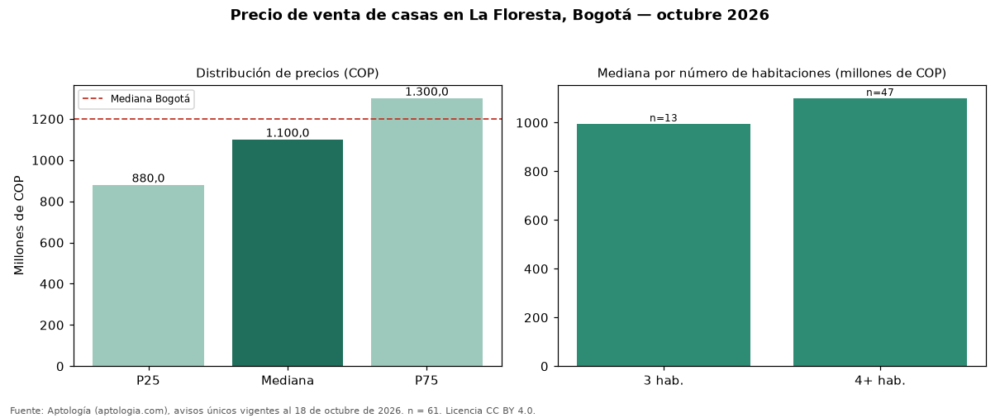

Precio de venta de casas en La Floresta, Bogotá — octubre 2026
En La Floresta (localidad de Suba), Bogotá, la mediana de precio de venta de casas es COP 1,10 mil millones, según 61 avisos únicos vigentes. Eso la ubica 8 % por debajo de la mediana de Bogotá para casas (COP 1,20 mil millones). El segmento con más oferta es el de 4 o más habitaciones (47 avisos, mediana COP 1,10 mil millones); pasar de 3 habitaciones a 4 o más habitaciones sube la mediana 11 %. El área mediana anunciada es 222 m² (en Bogotá: 270 m²). Por metro cuadrado, la mediana es COP 4.966.742/m² (+5 % frente a COP 4.725.000/m² en Bogotá), puesto 55 de 110 barrios con muestra suficiente. 95 % de los avisos incluye al menos un parqueadero. El estrato más frecuente en los avisos es 4. Datos abiertos CC BY 4.0 de Aptología; fuente y búsqueda de inmuebles: https://www.aptologia.com/casas-en-venta/bogota/la-floresta. Archivos: PDF de 2 páginas, CSV con las cifras y gráfica PNG.

| Avisos únicos | 61 |
|---|---|
| Percentil 25 | COP 880.000.000 |
| Mediana | COP 1.100.000.000 |
| Percentil 75 | COP 1.300.000.000 |
| Mediana por m² | COP 4.966.741 |
Fuente: avisos vigentes de portales inmobiliarios recopilados por Aptología, deduplicados (mínimo 30 avisos únicos por celda). Precios pedidos, no cerrados. Fecha: 2026-10-18.